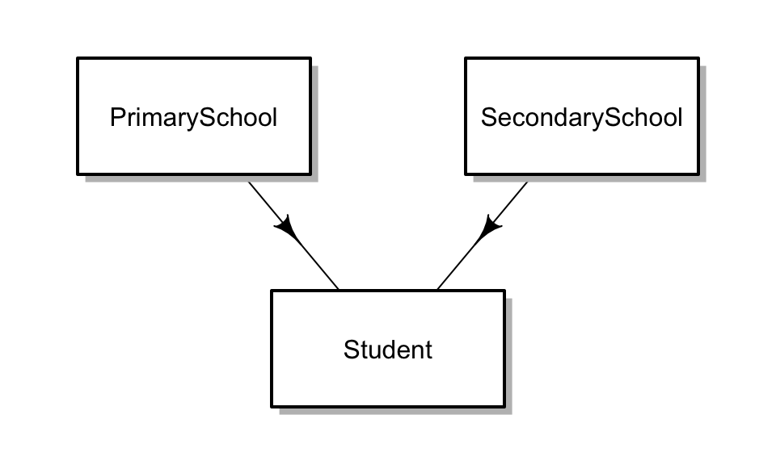

Although much of fabricatr’s is designed to generate hierarchical, nested data, we also provide functions to generate cross-classified (partially nested) data. In this vignette, we consider the example of generating data about students, whose educational outcomes depend on both the primary and secondary school they attend.
Let’s begin by visualizing how our data will be laid out:

Primary schools and secondary schools each exist independent of each other and have some specific characteristics. Students draw from a single primary school and a single secondary school, and may also have some individual characteristics.
The main steps involved in generating cross-classified data are as follows:
cross_classify()] function to join the non-nested data frames on particular variables, optionally specifying a desired correlation outcome.As with nested data, the workhorse function for ge_nerating new levels of data is [add_level()]. To generate multiple non-nested levels of data, it is necessary to add an additional argument in the following form:
schools_data <- fabricate(
primary_schools = add_level(N = 20, ps_quality = runif(N, 1, 10)),
secondary_schools = add_level(N = 15, ss_quality = runif(N, 1, 10), nest = FALSE),
...
)Observe that the second (and any subsequent) non-nested levels should contain the nest = FALSE argument – otherwise, secondary schools would be interpreted to be a level nested within schools. Each level can have as many variables as you want, and fabricatr will internally track each level separately.
This [fabricate()] call is incomplete – so far we have just completed the first step. We must also specify how to merge the two levels. If you do not specify a way to merge the levels, [fabricate()] will return the most recent working data frame: in this case, the secondary schools level.
You can also import the data you wish to cross-classify on from existing data sources, or a combination of imported data and data specified using fabricatr. Recall that the first argument to a [fabricate()] call is the data you wish to import. We have previously seen that it is possible to import a single data frame this way, but it is also possible to import a list of data frames, staging them all for use for cross-classifying data. Data imported in this manner looks like this:
schools_data <- fabricate(
list(primary_schools, secondary_schools),
...
)Again, the [fabricate()] call is incomplete – we have imported the data we wish to cross-classify on, but not yet learned how to merge the data.
Specifying a merge function is as easy as telling fabricatr which variables you wish to merge on, and how many resulting observations to make. Suppose we wish to create a school system that contains 1500 students, each of whom attends a single primary school and a single secondary school. At this stage, we want the allocations to primary and secondary schools to be random (no correlation between the types of schools people attend):
schools_data <- fabricate(
primary_schools = add_level(N = 20, ps_quality = runif(N, 1, 10)),
secondary_schools = add_level(N = 15, ss_quality = runif(N, 1, 10), nest = FALSE),
students = cross_level(N = 1500, by = join(primary_schools, secondary_schools))
)Merging requires the use of two functions: first, a [cross_level()] call, which specifies information about the resulting, merged level. In the simplest case, we need only specify an N, the number of observations to create. Second, a [join()] call passed to the by argument, which specifies how to join the two levels. In this case we are joining on the ID variables (primary_schools and secondary_schools), which have no substantive meaning but allow us to track which school is which.
The result is, predictably, a data frame containing 1500 observations, each of five columns: primary_schools (ID), ps_quality, secondary_schools (ID), ss_quality, and students (ID).
Additional variables can easily be added to cross-classified data, just as they can be added to any other fabricatr level call:
schools_data <- fabricate(
primary_schools = add_level(N = 20, ps_quality = runif(N, 1, 10)),
secondary_schools = add_level(N = 15, ss_quality = runif(N, 1, 10), nest = FALSE),
students = cross_level(N = 1500, by = join(primary_schools, secondary_schools),
SAT_score = 800 +
13 * ps_quality +
26 * ss_quality +
rnorm(N, 0, 50))
)Here, each student is assigned a standardized testing score, equal to a baseline, plus an additive effect from the quality of their primary school, plus a large additive effect from the quality of their secondary school, plus a stochastic component.
A linear regression confirms that the resulting data approximately reflects the the data generating process:
lm(SAT_score ~ ps_quality + ss_quality, data=schools_data)| Estimate | Std. Error | t value | Pr(>|t|) | |
|---|---|---|---|---|
| (Intercept) | 800 | 4.09 | 196 | 0 |
| ps_quality | 13 | 0.40 | 33 | 0 |
| ss_quality | 26 | 0.57 | 46 | 0 |
Other variables can be added in the students level, or indeed in either of the component levels.
The functionality discussed up until now is implemented in a variety of R packages. A key feature of fabricatr is that the resulting joined data can be sampled such that is has a specific correlation on the joined variables. We might, for example, reasonably assume that students assigned to better primary schools are later assigned to better secondary schools – whether due to economic geography of the area, selective admissions, or other causes. It is easy to specify a correlation between these outcomes using much the same syntax we used before:
corr_data <- fabricate(
primary_schools = add_level(N = 20, ps_quality = runif(N, 1, 10)),
secondary_schools = add_level(N = 15, ss_quality = runif(N, 1, 10), nest = FALSE),
students = cross_level(N = 1500, by = join(ps_quality, ss_quality, rho = 0.5),
SAT_score = 800 +
13 * ps_quality +
26 * ss_quality +
rnorm(N, 0, 50))
)Here, we have changed the structure of our [join()] function call. First, the variables we are joining on are ps_quality and ss_quality. Second, we specify a Spearman’s (rank) correlation coefficient, rho, which will induce a correlation in the resulting data based on the join function. In this case, we want a correlation between ps_quality and ss_quality of 0.5.
Technical details of the implementation of this function are contained below, but in the mean time the important thing to note is that rho can be any value from -1 to 1, and that the resulting correlation will be approximately equal to rho. Note: Because of the technical details of our implementation, the true correlation in the resulting data will be slightly attenuated from the specified rho. There is no general purpose correction to compensate for this attenuation.
We can check the resulting correlation here:
cor(corr_data$ps_quality, corr_data$ss_quality)0.47
It should be noted that the specified correlation exists only within the variables on which a join was specified: other variables from either data source will not be explicitly connected except through the joined variables.
All of the functions specified above work when joining more than two levels. We could extend our student example to include, for example, college quality. Nothing changes about the join syntax beyond the addition of the third or subsequent variable names:
three_data <- fabricate(
primary_schools = add_level(N = 20, ps_quality = runif(N, 1, 10)),
secondary_schools = add_level(N = 15, ss_quality = runif(N, 1, 10), nest = FALSE),
colleges = add_level(N = 50, c_quality = runif(N, 1, 10), nest = FALSE),
students = cross_level(N = 1500, by = join(ps_quality,
ss_quality,
c_quality,
rho = 0.2),
earning_potential = 20000 +
2000 * ps_quality +
6000 * ss_quality +
10000 * c_quality +
rnorm(N, 0, 5000))
)One potential source for failure is specifying an invalid rho. If you specify a rho that makes the correlation between the three variables impossible to obtain, the [fabricate()] call will fail. A common case of this occurring is specifying a negative rho with three or more levels – it is clear that if A is negative correlated with B, and B is negatively correlated with C, then A and C cannot be negatively correlated.
Instead of specifying a rho correlation coefficient, users can specify a sigma correlation matrix to make the resulting correlations more sophisticated. Consider the following setup:
sigma = matrix(c(1, 0.4, 0.2,
0.4, 1, 0.8,
0.2, 0.8, 1),
ncol = 3, nrow = 3)
adv_data <- fabricate(
primary_schools = add_level(N = 20, ps_quality = runif(N, 1, 10)),
secondary_schools = add_level(N = 15, ss_quality = runif(N, 1, 10), nest = FALSE),
colleges = add_level(N = 50, c_quality = runif(N, 1, 10), nest = FALSE),
students = cross_level(N = 1500, by = join(ps_quality,
ss_quality,
c_quality,
sigma = sigma),
earning_potential = 20000 +
2000 * ps_quality +
6000 * ss_quality +
10000 * c_quality +
rnorm(N, 0, 5000))
)sigma must be specified as a symmetric square matrix with a diagonal of all 1s and a feasible correlation structure.